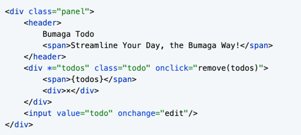

<body xmlns:>
<!-- path: -->
<div {todo}~200={todos|filter}> <!-- repeat -->
    <!-- path: .todos[N] -->
    <div class="todo" [data-done]={todo.done}>
        {todo.text|format}
        <div {summary}={todo.long.path.summary}> <!-- nested -->
            <!-- path: .todos[N].long.path.summary.title -->
            <h1>{summary.title}</h1>
            <h1>{todo.long.path.summary}</h1>
        </div>
        <div ?={todo.done} (onclick)=remove{todo}>remove</div>
        <div !={todo.done} (onclick)=finish{todo}>finish</div>
    </div>
</div>
<input [value]={todo} (oninput)=update{ar1}{arg2} (onchange)=append{todo}/>
<input value="initial"/>


</body>
